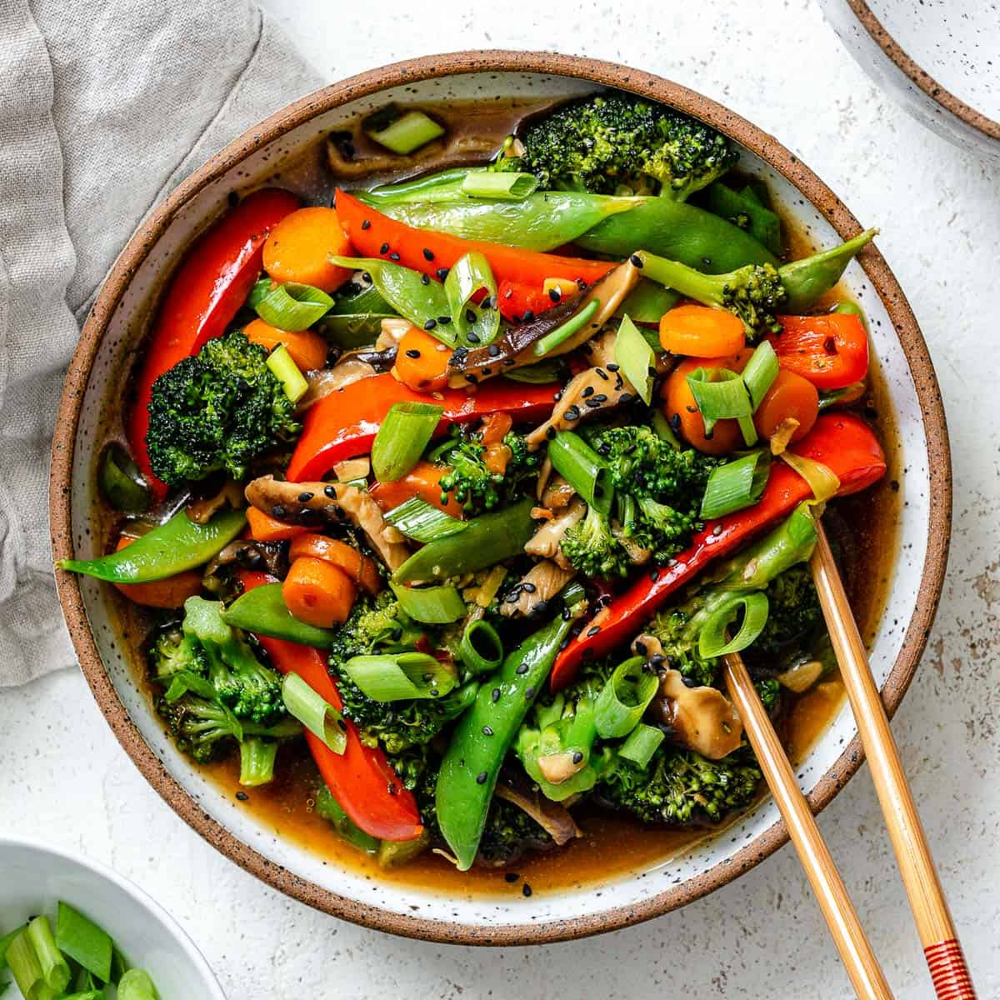

| 
|
|
This recipe is…
Vegetarian, vegan, plant-based, dairy-free and gluten-free.
|
Best vegetables to use in a stir fry (cheat sheet & timing!)
What are the best stir fry vegetables? Here’s our list of the types that work best. Important:
the toughness of the vegetable dictates the cook time! Take a look at the list below, and
start with the veggies that take the longest to cook. Then add in the quicker cooking veggies.
Here’s a cheat sheet:
Vegetables that take 6 to 7 minutes to stir fry:
- Broccoli
- Bell pepper of any color, or a mix
- Onion: white, yellow, or red
- Mushrooms: portobello or shiitake
- Carrots, thinly sliced or matchsticks
Vegetables that take 3 to 5 minutes to stir fry:
- Cabbage, thinly sliced
- Snap peas or snow peas
- Bok choy, chopped
- Zucchini or summer squash
- Edamame, frozen and shelled
Vegetables that take 1 minute to stir fry:
- Garlic, minced
- Ginger, minced
- Green onion, thinly sliced (or use as a garnish)
How to stir fry vegetables
This is also important, so listen up! A stir fry cooks ingredients at high heat in hot oil. This
technique originated in China, and has since spread to other parts of Asia and around the
world. It’s different from steaming vegetables and sauteing them, because you’ll want your
veggies to all come in contact with the hot pan for a short period of time. Here are a few
pointers on how to stir fry vegetables:
- Pick the right vegetables and add them based on the timing in the list above.
- Use your largest pan. A large skillet, cast iron skillet or wok work here.
- Important: Don’t overfill the pan! If you overfill the pan with vegetables, they will steam instead of stir frying.
If you want to make a large quantity, cook it in batches.
ref by plantbasedonabudget